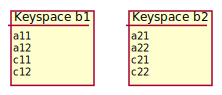

JOIN Clause
- reference
The JOIN clause enables you to create new input objects by combining two or more source objects.
Purpose
The JOIN clause is used within the FROM clause.
It creates an input object by combining two or more source objects.
Couchbase Server supports three types of JOIN clause, which are described in the sections below: ANSI JOIN, Lookup JOIN, and Index JOIN.
In Couchbase Server 7.1 and later, you may also use comma-separated joins. For further details, refer to Comma-Separated Join.
Prerequisites
For you to select data from keyspace or expression, you must have the query_select privilege on that keyspace.
For more details about user roles, see
Authorization.
Syntax
join-clause ::= ansi-join-clause | lookup-join-clause | index-join-clause| ansi-join-clause | |
| lookup-join-clause | |
| index-join-clause |
Left-Hand Side
The JOIN clause cannot be the first term within the FROM clause; it must be preceded by another FROM term.
The term immediately preceding the JOIN clause represents the left-hand side of the JOIN clause.
You can chain the JOIN clause with any of the other permitted FROM terms, including another JOIN clause.
For more information, see the page on the FROM clause.
There are restrictions on what types of FROM terms may be chained and in what order — see the descriptions on this page for more details.
The types of FROM term that may be used as the left-hand side of the JOIN clause are summarized in the following table.
Unresolved include directive in modules/n1ql/partials/n1ql-language-reference/from-term.adoc - include::ROOT:partial$query-context.adoc[]
| Type | Example |
|---|---|
|
|
|
|
|
|
|
ANSI JOIN Clause
Purpose
To be closer to standard SQL syntax, ANSI JOIN can join arbitrary fields of the documents and can be chained together.
Syntax
ansi-join-clause ::= ansi-join-type? 'JOIN' ansi-join-rhs ansi-join-predicate
| ansi-join-type | |
| ansi-join-rhs | |
| ansi-join-predicate |
Join Type
ansi-join-type ::= 'INNER' | ( 'LEFT' | 'RIGHT' ) 'OUTER'?
This clause represents the type of ANSI join.
INNER-
For each joined object produced, both the left-hand side and right-hand side source objects of the
ONclause must be non-MISSING and non-NULL. LEFT [OUTER]-
[Query Service interprets
LEFTasLEFT OUTER]For each joined object produced, only the left-hand source objects of the
ONclause must be non-MISSING and non-NULL. RIGHT [OUTER]-
[Query Service interprets
RIGHTasRIGHT OUTER]For each joined object produced, only the right-hand source objects of the
ONclause must be non-MISSING and non-NULL.
This clause is optional.
If omitted, the default is INNER.
The following table summarizes the ANSI join types currently supported, and describes how you may chain them together.
Unresolved include directive in modules/n1ql/pages/n1ql-language-reference/join.adoc - include::ROOT:partial$query-context.adoc[]
| Join Type | Remarks | Example |
|---|---|---|
[INNER] JOIN ... ON |
INNER JOIN and LEFT OUTER JOIN can be mixed in any number and/or order. |
|
LEFT [OUTER] JOIN ... ON |
|
|
RIGHT [OUTER] JOIN ... ON |
RIGHT OUTER JOIN can only be the first join specified in a FROM clause. |
|
|
In Couchbase Server 6.5 and later, if you create either of the following:
Then the query is transformed internally into an INNER JOIN for greater efficiency. |
Join Predicate
ansi-join-predicate ::= 'ON' expr
expr-
Boolean expression representing the join condition between the left-hand side FROM term and the ANSI JOIN Right-Hand Side. This expression may contain fields, constant expressions, or any complex SQL++ expression.
Limitations
-
A RIGHT OUTER join is only supported when it’s the only join in the query; or when it’s the first join in a chain of joins.
-
No mixing of ANSI join syntax with lookup or index join syntax in the same FROM clause.
-
If the right-hand side of an ANSI join is a keyspace reference, then for the nested-loop join method an appropriate secondary index must exist on the right-hand side keyspace; for the hash join method, a primary index can be used.
-
Adaptive indexes are not considered when selecting indexes on inner side of the join.
-
You may chain ANSI joins with comma-separated joins; however, the comma-separated joins must come after any JOIN, NEST, or UNNEST clauses.
Examples
Unresolved include directive in modules/n1ql/pages/n1ql-language-reference/join.adoc - include::ROOT:partial$query-context.adoc[]
List the source airports and airlines that fly into SFO, where only the non-null route documents join with matching airline documents.
SELECT route.airlineid, airline.name, route.sourceairport, route.destinationairport
FROM route
INNER JOIN airline
ON route.airlineid = META(airline).id
WHERE route.destinationairport = "SFO"
ORDER BY route.sourceairport;[
{
"airlineid": "airline_5209",
"destinationairport": "SFO",
"name": "United Airlines",
"sourceairport": "ABQ"
},
{
"airlineid": "airline_5209",
"destinationairport": "SFO",
"name": "United Airlines",
"sourceairport": "ACV"
},
{
"airlineid": "airline_5209",
"destinationairport": "SFO",
"name": "United Airlines",
"sourceairport": "AKL"
},
// ...The INNER JOIN only returns results where a left-side document matches a right-side document.
List the airports and landmarks in the same city, ordered by the airports.
SELECT DISTINCT MIN(aport.airportname) AS Airport__Name,
MIN(aport.tz) AS Airport__Time,
MIN(lmark.name) AS Landmark_Name
FROM airport aport (1)
LEFT JOIN landmark lmark (2)
ON aport.city = lmark.city
AND lmark.country = "United States"
GROUP BY aport.airportname
ORDER BY aport.airportname
LIMIT 4;| 1 | The airport keyspace is on the left-hand side of the join. |
| 2 | The landmark keyspace is on the right-hand side of the join. |
[
{
"Airport__Name": "Abbeville",
"Airport__Time": "Europe/Paris",
"Landmark_Name": null (1)
},
{
"Airport__Name": "Aberdeen Regional Airport",
"Airport__Time": "America/Chicago",
"Landmark_Name": null
},
{
"Airport__Name": "Abilene Rgnl",
"Airport__Time": "America/Chicago",
"Landmark_Name": null
},
{
"Airport__Name": "Abraham Lincoln Capital",
"Airport__Time": "America/Chicago",
"Landmark_Name": null
}
]| 1 | The LEFT OUTER JOIN lists all the left-side results, even if there are no matching right-side documents, as indicated by the results in which the fields from the landmark keyspace are null or missing. |
List the airports and landmarks in the same city, ordered by the landmarks.
SELECT DISTINCT MIN(aport.airportname) AS Airport__Name,
MIN(aport.tz) AS Airport__Time,
MIN(lmark.name) AS Landmark_Name,
FROM airport aport (1)
RIGHT JOIN landmark lmark (2)
ON aport.city = lmark.city
AND aport.country = "United States"
GROUP BY lmark.name
ORDER BY lmark.name
LIMIT 4;| 1 | The airport keyspace is on the left-hand side of the join. |
| 2 | The landmark keyspace is on the right-hand side of the join. |
[
{
"Airport__Name": "San Francisco Intl",
"Airport__Time": "America/Los_Angeles",
"Landmark_Name": ""Hippie Temptation" house"
},
{
"Airport__Name": null, (1)
"Airport__Time": null,
"Landmark_Name": "'The Argyll Arms Hotel"
},
{
"Airport__Name": null,
"Airport__Time": null,
"Landmark_Name": "'Visit the Hut of the Shadows and other End of the Road sculptures"
},
{
"Airport__Name": "London-Corbin Airport-MaGee Field",
"Airport__Time": "America/New_York",
"Landmark_Name": "02 Shepherd's Bush Empire"
}
]| 1 | The RIGHT OUTER JOIN lists all the right-side results, even if there are no matching left-side documents, as indicated by the results in which the fields from the airport keyspace are null or missing. |
Use an ANSI JOIN to list the routes and destination airports that are available from London Heathrow (ICAO code EGLL).
By default, the ANSI JOIN uses the def_inventory_route_sourceairport index, which is installed with the travel-sample bucket.
This index has sourceairport as its leading key.
CREATE INDEX def_inventory_route_sourceairport
ON route (sourceairport);SELECT META(route).id route_id, route.airline, route.destinationairport
FROM airport JOIN route ON route.sourceairport = airport.faa
WHERE airport.icao = "EGLL"
ORDER BY route_id;[
{
"airline": "AH",
"destinationairport": "ALG",
"route_id": "route_10186"
},
{
"airline": "AI",
"destinationairport": "BOM",
"route_id": "route_10570"
},
// ...If no covering index is available, the Query Service has to fetch each matching record from the route keyspace to get the airline and destination airport information, as shown in the query plan:
If you create a covering index, with sourceairport as the leading key, and airline and destinationairport as additional index keys:
CREATE INDEX idx_route_src_dst_airline
ON route (sourceairport, destinationairport, airline);... then the Query Service does not need to fetch any records from the route keyspace, as shown in the query plan:
ANSI JOIN Right-Hand Side
ansi-join-rhs ::= rhs-keyspace | rhs-subquery | rhs-generic
In Couchbase Server 6.5 and later, the right-hand side of an ANSI join may be a keyspace reference, a subquery, or a generic expression term.
| rhs-keyspace | |
| rhs-subquery | |
| rhs-generic |
Right-Hand Side Keyspace
rhs-keyspace ::= keyspace-ref ( 'AS'? alias )? ansi-join-hints?
| keyspace-ref | |
| alias | |
| ansi-join-hints |
Keyspace Reference
Keyspace reference for the right-hand side of the ANSI join. For details, see Keyspace Reference.
AS Alias
Assigns another name to the keyspace reference. For details, see AS Clause.
Assigning an alias to the keyspace reference is optional.
If you assign an alias to the keyspace reference, the AS keyword may be omitted.
Right-Hand Side Subquery
rhs-subquery ::= subquery-expr 'AS'? alias
| subquery-expr | |
| alias |
Subquery Expression
Use parentheses to specify a subquery for the right-hand side of the ANSI join. For details, see Subquery Expression.
| A subquery on the right-hand side of the ANSI join cannot be correlated, i.e. it cannot refer to a keyspace in the outer query block. This will lead to an error. |
AS Alias
Assigns another name to the subquery. For details, see AS Clause.
You must assign an alias to a subquery on the right-hand side of the join.
However, when you assign an alias to the subquery, the AS keyword may be omitted.
Right-Hand Side Generic Expression
rhs-generic ::= expr ( 'AS'? alias )?
| expr | |
| alias |
Expression Term
A SQL++ expression generating JSON documents or objects for the right-hand side of the ANSI join.
| An expression on the right-hand side of the ANSI join may be correlated, i.e. it may refer to a keyspace on the left-hand side of the join. In this case, only a nested-loop join may be used. |
AS Alias
Assigns another name to the generic expression. For details, see AS Clause.
You must assign an alias to the generic expression if it is not an identifier; otherwise, assigning an alias is optional.
However, when you assign an alias to the generic expression, the AS keyword may be omitted.
Examples
Unresolved include directive in modules/n1ql/pages/n1ql-language-reference/join.adoc - include::ROOT:partial$query-context.adoc[]
Find the destination airport of all routes whose source airport is in San Francisco.
SELECT DISTINCT subquery.destinationairport
FROM airport
JOIN (
SELECT destinationairport, sourceairport
FROM route
) AS subquery
ON airport.faa = subquery.sourceairport
WHERE airport.city = "San Francisco";[
{
"destinationairport": "HKG"
},
{
"destinationairport": "ICN"
},
{
"destinationairport": "ATL"
},
{
"destinationairport": "BJX"
},
{
"destinationairport": "GDL"
},
// ...Find the destination airport of all routes in the given array whose source airport is in San Francisco.
SELECT DISTINCT expression.destinationairport
FROM airport JOIN [
{"destinationairport": "KEF", "sourceairport": "SFO", "type": "route"},
{"destinationairport": "KEF", "sourceairport": "LHR", "type": "route"}
] AS expression
ON airport.faa = expression.sourceairport
WHERE airport.city = "San Francisco";[
{
"destinationairport": "KEF"
}
]ANSI JOIN Hints
ansi-join-hints ::= use-hash-hint | use-nl-hint | multiple-hints
| use-hash-hint | |
| use-nl-hint | |
| multiple-hints |
Couchbase Server Enterprise Edition supports two join methods for performing ANSI join: nested-loop join and hash join.
Two corresponding join hints are introduced: USE HASH and USE NL.
The ANSI join hints are similar to the USE INDEX or USE KEYS hints. The ANSI join hints can be specified after the right-hand side of an ANSI join specification.
| The join hint for the first join should be specified on the first join’s right-hand side, and the join hint for the second join should be specified on the second join’s right-hand side, etc. If a join hint is specified on the first FROM term, i.e. the first join’s left-hand side, an error is returned. |
In Couchbase Server 7.1 and later, you can also supply a join hint within a specially-formatted hint comment.
Note that you cannot specify a join hint for the same keyspace using both the USE clause and a hint comment.
If you do this, the USE clause and the hint comment are both marked as erroneous and ignored by the optimizer.
|
USE HASH Hint
use-hash-hint ::= 'USE' use-hash-termuse-hash-term ::= 'HASH' '(' ( 'BUILD' | 'PROBE' ) ')'There are two versions of the USE HASH hint:
-
USE HASH(BUILD)— The right-hand side of the join is to be used as the build side. -
USE HASH(PROBE)— The right-hand side of the join is to be used as the probe side.
A hash join has two sides: a build side and a probe side.
The build side of the join will be used to create an in-memory hash table.
The probe side will use that table to find matches and perform the join.
Typically, this means you want the build side to be used on the smaller of the two sets.
However, you can only supply one hash hint, and only to the right side of the join.
So if you specify BUILD on the right side, then you are implicitly using PROBE on the left side (and vice versa).
In Couchbase Server 7.1 and later, this clause is equivalent to the USE_HASH optimizer hint.
For more details, refer to Keyspace Hints.
USE NL Hint
use-nl-hint ::= 'USE' use-nl-termuse-nl-term ::= 'NL'
This join hint instructs the planner to use nested-loop join (NL join) for the join being considered.
In Couchbase Server 7.1 and later, this clause is equivalent to the USE_NL optimizer hint.
For more details, refer to Keyspace Hints.
Multiple Hints
multiple-hints ::= 'USE' ( ansi-hint-terms other-hint-terms |
other-hint-terms ansi-hint-terms )
ansi-hint-terms ::= use-hash-term | use-nl-termother-hint-terms ::= use-index-term | use-keys-termYou can use only one join hint (USE HASH or USE NL) together with only one other hint (USE INDEX or USE KEYS) for a total of two hints. The order of the two hints doesn’t matter.
When multiple hints are being specified, use only one USE keyword with one following the other, as shown in Example 10 and Example 11.
When chosen, the hash join will always work; the restrictions are on any USE KEYS hint clause:
-
Must not depend on any previous keyspaces.
-
The expression must be constants, host variables, etc.
-
Must not contain any subqueries.
| If the USE KEYS hint contains references to other keyspaces or subqueries, then the USE HASH hint will be ignored and nested-loop join will be used instead. |
Examples
Unresolved include directive in modules/n1ql/pages/n1ql-language-reference/join.adoc - include::ROOT:partial$query-context.adoc[]
The keyspace aline is to be joined (with rte) using hash join, and aline is used as the probe side of the hash join.
SELECT COUNT(1) AS Total_Count
FROM route rte
INNER JOIN airline aline
USE HASH (PROBE)
ON rte.airlineid = META(aline).id;[
{
"Total_Count": 17629
}
]This is effectively the same query as the previous example, except the two keyspaces are switched, and here the USE HASH(BUILD) hint is used, indicating the hash join should use rte as the build side.
SELECT COUNT(1) AS Total_Count
FROM airline aline
INNER JOIN route rte
USE HASH (BUILD)
ON (rte.airlineid = META(aline).id);[
{
"Total_Count": 17629
}
]SELECT a.airportname AS airport, r.id AS route
FROM route AS r
JOIN airport AS a
USE NL
ON a.faa = r.sourceairport
WHERE r.sourceairport = "SFO"
LIMIT 4;SELECT COUNT(1) AS Total_Count
FROM route rte
INNER JOIN airline aline
USE INDEX (idx_destinations) HASH (PROBE)
ON (rte.airlineid = META(aline).id);SELECT COUNT(1) AS Total_Count
FROM route rte
INNER JOIN airline aline
USE HASH (PROBE) KEYS ["airline_10", "airline_21", "airline_22"]
ON (rte.airlineid = META(aline).id);ANSI JOIN and Arrays
ANSI JOIN provides great flexibility since the ON clause of an ANSI JOIN can be any expression as long as it evaluates to TRUE or FALSE.
Below are different join scenarios involving arrays and ways to handle each scenario.
|
These keyspaces and indexes will be used throughout this section’s array scenarios.
As a convention, when a field name starts with

Within each keyspace, both |
ANSI JOIN with No Arrays
In this scenario, there is no involvement of arrays in the join. These are just straight-forward joins:
SELECT *
FROM b1
JOIN b2
ON b1.c11 = b2.c21
AND b2.c22 = 100
WHERE b1.c12 = 10;Here the joins are using non-array fields of each keyspace.
The following case also falls in this scenario:
SELECT *
FROM b1
JOIN b2
ON b1.c11 = b2.c21
AND b2.c22 = 100
AND ANY v IN b2.a21 SATISFIES v = 10 END
WHERE b1.c12 = 10;In this example, although there is an ANY predicate on the right-hand side array b2.a21, the ANY predicate does not involve any joins, and thus, as far as the join is concerned, it is still a 1-to-1 join.
Similarly:
SELECT *
FROM b1
JOIN b2
ON b1.c11 = b2.c21
WHERE b1.c11 = 10
AND b1.c12 = 100
AND ANY v IN b1.a11 SATISFIES v = 20 END;In this case the ANY predicate is on the left-hand side array b1.a11; however, similar to above, the ANY predicate does not involve any joins, and thus the join is still 1-to-1.
We can even have ANY predicates on both sides:
SELECT *
FROM b1
JOIN b2
ON b1.c11 = b2.c21
AND b2.c22 = 100
AND ANY v IN b2.a21 SATISFIES v = 10 END
WHERE b1.c11 = 10
AND b1.c12 = 100
AND ANY v IN b1.a11 SATISFIES v = 10 END;Again, the ANY predicates do not involve any join, and the join is still 1-to-1.
ANSI JOIN with Entire Array as Index Key
As a special case, it is possible to perform ANSI JOIN on an entire array as a join key:
SELECT *
FROM b1
JOIN b2
ON b1.a21 = b2.a22
WHERE b1.c11 = 10
AND b1.c12 = 100;In this case, the entire array must match each other for the join to work.
For all practical purposes, the array here is treated as a scalar since there is no logic to iterate through elements of an array here.
The entire array is used as an index key (b2_idx2) and as such, an entire array is used as an index span to probe the index.
The join here can also be considered as 1-to-1.
ANSI JOIN Involving Right-Hand Side Arrays
In this scenario, the join involves an array on the right-hand side keyspace:
SELECT *
FROM b1
JOIN b2
ON b2.c21 = 10
AND b2.c22 = 100
AND ANY v IN b2.a21 SATISFIES v = b1.c12 END
WHERE b1.c11 = 10;In this case, the ANY predicate involves a join, and thus, effectively we are joining b1 with elements of the b2.a21 array.
This now becomes a 1-to-many join.
Note that we use an ANY clause for this scenario since it’s a natural extension of the existing support for array indexes; the only difference is for index span generation, we now can have a potential join expression.
Array indexes can be used for join in this scenario.
ANSI JOIN Involving Left-Hand Side Arrays
This is a slightly more complex scenario, where the array reference is on the left-hand side of the join, and it’s a many-to-1 join. There are two alternative ways to handle the scenario where the array appears on the left-hand side of the join.
Use UNNEST
This alternative will flatten the left-hand side array first, before performing the join:
SELECT *
FROM b1 UNNEST b1.a12 AS ba1
JOIN b2
ON ba1 = b2.c22
AND b2.c21 = 10
WHERE b1.c11 = 10
AND b1.c12 = 100;The UNNEST operation is used to flatten the array, turning one left-hand side document into multiple documents; and then for each one of them, join with the right-hand side. This way, by the time join is being performed, it is a regular join, since the array is already flattened in the UNNEST step.
Use IN clause
This alternative uses the IN clause to handle the array:
SELECT *
FROM b1
JOIN b2
ON b2.c22 IN b1.a12 AND b2.c21 = 10
WHERE b1.c11 = 10 AND b1.c12 = 100;By using the IN clause, the right-hand side field value can match any of the elements of the left-hand side array. Conceptually, we are using each element of the left-hand side array to probe the right-hand side index.
Differences Between the Two Alternatives
There is a semantical difference between the two alternatives. With UNNEST, we are first turning one left-hand side document into multiple documents and then performing the join. With IN-clause, there is still only one left-hand side document, which can then join with one or more right-hand side documents. Thus:
-
If the array contains duplicate values,
-
the UNNEST method treats each duplicate as an individual value and thus duplicated results will be returned;
-
the IN clause method will not duplicate the result.
-
-
If no duplicate values exists and we are performing inner join,
-
then the two alternatives will likely give the same result.
-
-
If outer join is performed, assuming there are N elements in the left-hand side array, and assuming there is at most one matching document from the right-hand side for each element of the array,
-
the UNNEST method will produce N result documents;
-
the IN clause method may produce < N result documents if some of the array elements do not have matching right-hand side documents.
-
ANSI JOIN with Arrays on Both Sides
If the join involves arrays on both sides, then we can combine the approaches above, i.e., using ANY clause to handle the right-hand side array and either UNNEST or IN clause to handle the left-hand side array. For example:
SELECT *
FROM b1
UNNEST b1.a12 AS ba1
JOIN b2
ON ANY v IN b2.a21 SATISFIES v = ba1 END
AND b2.c21 = 10
AND b2.c22 = 100
WHERE b1.c11 = 10
AND b1.c12 = 100;or
SELECT *
FROM b1
JOIN b2
ON ANY v IN b2.a21 SATISFIES v IN b1.a12 END
AND b2.c21 = 10
AND b2.c22 = 100
WHERE b1.c11 = 10
AND b1.c12 = 100;Lookup JOIN Clause
Purpose
A lookup join is a legacy syntax for joins. It enables you to join a foreign key field on the left-hand side of the join with the primary document key on the right-hand side of the join. Couchbase Server version 4.1 and earlier supported only lookup joins.
In the join predicate for a lookup join, the ON KEYS expression must refer to the foreign key in the left-hand side keyspace.
This is then used to retrieve documents from the right-hand side keyspace.
Syntax
lookup-join-clause ::= lookup-join-type? 'JOIN' lookup-join-rhs lookup-join-predicate| lookup-join-type | |
| lookup-join-rhs | |
| lookup-join-predicate |
Join Type
lookup-join-type ::= 'INNER' | ( 'LEFT' 'OUTER'? )
This clause represents the type of join.
INNER-
For each joined object produced, both the left-hand and right-hand source objects must be non-
MISSINGand non-NULL. LEFT [OUTER]-
[Query Service interprets
LEFTasLEFT OUTER]For each joined object produced, only the left-hand source objects must be non-
MISSINGand non-NULL.
This clause is optional.
If omitted, the default is INNER.
Join Right-Hand Side
lookup-join-rhs ::= keyspace-ref ( 'AS'? alias )?
| keyspace-ref | |
| alias |
Keyspace Reference
Keyspace reference for the right-hand side of the lookup join. For details, see Keyspace Reference.
| The right-hand side of a lookup join must be a keyspace. Expressions, subqueries, or other join combinations cannot be on the right-hand side of a lookup join. |
AS Alias
Assigns another name to the right-hand side of the lookup join. For details, see AS Clause.
Assigning an alias to the keyspace reference is optional.
If you assign an alias to the keyspace reference, the AS keyword may be omitted.
Join Predicate
lookup-join-predicate ::= 'ON' 'PRIMARY'? 'KEYS' exprThe ON KEYS expression produces a document key or array of document keys, which is used to retrieve documents from the right-hand side keyspace.
- expr
-
[Required] String or expression representing the foreign key in the left-hand side keyspace.
Return Values
If LEFT or LEFT OUTER is specified, then a left outer join is performed.
At least one joined object is produced for each left-hand source object.
If the right-hand source object is NULL or MISSING, then the joined object’s right-hand side value is also NULL or MISSING (omitted), respectively.
Limitations
Lookup joins can be chained with other lookup joins or nests and index joins or nests, but they cannot be mixed with ANSI joins, ANSI nests, or comma-separated joins.
Examples
Unresolved include directive in modules/n1ql/pages/n1ql-language-reference/join.adoc - include::ROOT:partial$query-context.adoc[]
List all airlines and non-stop routes from SFO in the route keyspace.
SELECT DISTINCT route.destinationairport, route.stops, route.airline,
airline.name, airline.callsign
FROM route
JOIN airline
ON KEYS route.airlineid
WHERE route.sourceairport = "SFO"
AND route.stops = 0
LIMIT 4;[
{
"airline": "B6",
"callsign": "JETBLUE",
"destinationairport": "AUS",
"name": "JetBlue Airways",
"stops": 0
},
{
"airline": "B6",
"callsign": "JETBLUE",
"destinationairport": "BOS",
"name": "JetBlue Airways",
"stops": 0
},
{
"airline": "B6",
"callsign": "JETBLUE",
"destinationairport": "DXB",
"name": "JetBlue Airways",
"stops": 0
},
{
"airline": "B6",
"callsign": "JETBLUE",
"destinationairport": "FLL",
"name": "JetBlue Airways",
"stops": 0
}
]List routes from Atlanta to Seattle, including those for which there is no airline in the airline keyspace.
SELECT route.airline, route.sourceairport, route.destinationairport,
airline.callsign
FROM route
LEFT JOIN airline
ON KEYS route.airlineid
WHERE route.destinationairport = "ATL"
AND route.sourceairport = "SEA";[
{
"airline": "AF",
"callsign": "AIRFRANS",
"destinationairport": "ATL",
"sourceairport": "SEA"
},
{
"airline": "AM",
"destinationairport": "ATL",
"sourceairport": "SEA"
},
{
"airline": "AS",
"destinationairport": "ATL",
"sourceairport": "SEA"
},
{
"airline": "AZ",
"destinationairport": "ATL",
"sourceairport": "SEA"
},
{
"airline": "DL",
"callsign": "DELTA",
"destinationairport": "ATL",
"sourceairport": "SEA"
},
{
"airline": "KL",
"destinationairport": "ATL",
"sourceairport": "SEA"
}
]Index JOIN Clause
Purpose
An index join is another legacy syntax for joins which reverses the direction of a lookup join. It enables you to join the primary document key on the left-hand side of the join with a foreign key field on the right-hand side of the join.
You can use an index join when a lookup join would be inefficient, and you need to flip the relationship so the join predicate is on the right-hand side of the join.
For index joins, the syntax uses ON KEY … FOR (singular) instead of ON KEYS (plural).
This is because an index join’s ON KEY … FOR expression produces a single scalar value; whereas a lookup join’s ON KEYS expression can produce either a single scalar or an array of scalar values.
| An index join requires an inverse index on the foreign key in the keyspace on the right-hand side of the join. |
Syntax
index-join-clause ::= index-join-type? 'JOIN' index-join-rhs index-join-predicate| index-join-type | |
| index-join-rhs | |
| index-join-predicate |
Join Type
index-join-type ::= 'INNER' | ( 'LEFT' 'OUTER'? )
This clause represents the type of join.
INNER-
For each joined object produced, both the left-hand and right-hand source objects must be non-
MISSINGand non-NULL. LEFT [OUTER]-
[Query Service interprets
LEFTasLEFT OUTER]For each joined object produced, only the left-hand source objects must be non-
MISSINGand non-NULL.
This clause is optional.
If omitted, the default is INNER.
Join Right-Hand Side
index-join-rhs ::= keyspace-ref ( 'AS'? alias )?
| keyspace-ref | |
| alias |
Keyspace Reference
Keyspace reference for right-hand side of an index join. For details, see Keyspace Reference.
| The right-hand side of an index join must be a keyspace. Expressions, subqueries, or other join combinations cannot be on the right-hand side of an index join. |
AS Alias
Assigns another name to the right-hand side of the index join. For details, see AS Clause.
Assigning an alias to the keyspace reference is optional.
If you assign an alias to the keyspace reference, the AS keyword may be omitted.
Join Predicate
index-join-predicate ::= 'ON' 'PRIMARY'? 'KEY' expr 'FOR' alias
expr-
Expression in the form
rhs-expression.lhs-expression-key:rhs-expression-
Keyspace reference for the right-hand side of the index join.
lhs-expression-key-
String or expression representing the attribute in
rhs-expressionand referencing the document key foralias.
alias-
Keyspace reference for the left-hand side of the index join.
Limitations
Index joins can be chained with other index joins or nests and lookup joins or nests, but they cannot be mixed with ANSI joins, ANSI nests, or comma-separated joins.
Examples
Unresolved include directive in modules/n1ql/pages/n1ql-language-reference/join.adoc - include::ROOT:partial$query-context.adoc[]
Consider the query below, similar to Example 12 above with route and airline documents, where route.airlineid is the document key of route documents and airline documents have no reference to route documents:
SELECT DISTINCT route.destinationairport, route.stops, route.airline,
airline.name, airline.callsign
FROM route
JOIN airline
ON KEYS route.airlineid
WHERE airline.icao = "SWA"
LIMIT 4;This query gets a list of Southwest Airlines (SWA) flights, but getting SWA flights cannot be efficiently executed without making a Cartesian product of all route documents (left-hand side) with all airline documents (right-hand side).
This query cannot use any index on airline to directly access SWA flights because airline is on the right-hand side.
Also, you cannot rewrite the query to put the airline document on the left-hand side (to use any index) and the route document on the right-hand side because the airline documents (on the left-hand side) have no primary keys to access the route documents (on the right-hand side).
Using index joins, the same query can be written as:
CREATE INDEX route_airlineid ON route(airlineid);CREATE INDEX airline_icao ON airline(icao);SELECT * FROM airline
JOIN route
ON KEY route.airlineid FOR airline
WHERE airline.icao = "SWA";[
{
"name": "JetBlue Airways",
"schedule": [
{
"day": 0,
"flight": "B6076",
"utc": "10:15:00"
},
{
"day": 0,
"flight": "B6321",
"utc": "00:06:00"
},
// ...
]
}
]If you generalize the same query, it looks like the following:
CREATE INDEX on-key-for-index-name rhs-expression (lhs-expression-key);
SELECT projection-list FROM lhs-expression JOIN rhs-expression ON KEY rhs-expression.lhs-expression-key FOR lhs-expression [ WHERE predicates ] ;
There are three important changes in the index scan syntax example above:
-
CREATE INDEXon theON KEYexpressionroute.airlineidto accessroutedocuments usingairlineid, which are produced on the left-hand side. -
The
ON KEY route.airlineid FOR airlineenables SQL++ to use the indexroute.airlineid. -
Create any optional index such as
route.airlinethat can be used on airline (left-hand side).
ON KEY ... FORThe following example counts the number of distinct "AA" airline routes for each airport after creating the following index, if not already created.
CREATE INDEX route_airlineid ON route(airlineid);SELECT COUNT(DISTINCT route.sourceairport) AS DistinctAirports
FROM airline
JOIN route
ON KEY route.airlineid FOR airline
WHERE airline.iata = "AA";[
{
"DistinctAirports": 429
}
]Appendix: Summary of JOIN Types
Unresolved include directive in modules/n1ql/pages/n1ql-language-reference/join.adoc - include::ROOT:partial$query-context.adoc[]
ANSI
Left-Hand Side (lhs) |
Any field or expression that produces a value that will be matched on the right-hand side. |
Right-Hand Side (rhs) |
Anything that can have a proper index on the join expression. |
Syntax |
lhs-expr JOIN rhs-keyspace ON any join condition |
Example |
|
Refer also to Comma-Separated Join.
Lookup
Left-Hand Side (lhs) |
Must produce a Document Key for the right-hand side. |
Right-Hand Side (rhs) |
Must have a Document Key. |
Syntax |
lhs-expr JOIN rhs-keyspace ON KEYS lhs-expr.foreign-key |
Example |
|
Index
Left-Hand Side (lhs) |
Must produce a key for the right-hand side index. |
Right-Hand Side (rhs) |
Must have a proper index on the field or expression that maps to the Document Key of the left-hand side. |
Syntax |
lhs-keyspace JOIN rhs-keyspace ON KEY rhs-kspace.idx_key FOR lhs-keyspace |
Example |
|